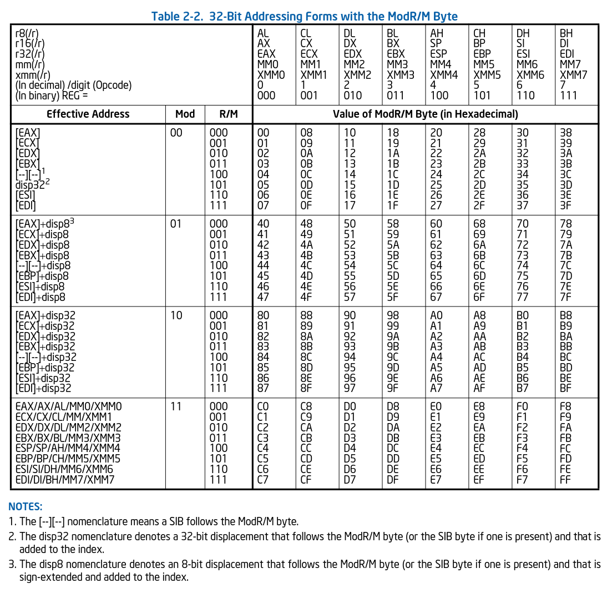

AI Fails
Here are some question that AI still can't answer correctly. If AI technology has improved, please drop me an email so I can update the page. (NOTE: sometimes the AI mistakes are intermittent/random, so please test multiple times!)
-
What does 8D C0 in x86 machine code do?
ChatGPTChatGPT says that this instruction is a NOP, which is wrong. The LEA instruction takes a register and a memory address. The following is an excerpt from the Intel SDM:  As you can see, ModR/M byte C0 corresponds to the register argument EAX (from the cell containing C0, go up to the top header) and the register or memory argument (read left, to the column that says "Effective Address") of register EAX. Notably, EAX is a register, not a memory address, so this instruction is invalid. Reading from the "Protected Mode Exceptions" table for the LEA instruction, we see that exception #UD (invalid instruction) is raised in this case. In effect, this is the same as the
UD2instruction, notNOP. -
Does the following Python code crash? If so, how? If not, what's the output?
try: raise Exception() except Exception as __builtins__: pass print(type(__builtins__))ChatGPTChatGPT claims that <class 'Exception'> would be printed, since the
except Exception as __builtins__:line is run and assigns the resulting exception object to__builtins__. This is true, however at the end of an exception handler clause, Python runs the equivalent ofdel excCapture, as a bandaid for not having proper scopes for exception handlers. This causes the shadowing__builtins__to be deleted, and interestingly* (at least on CPython), replaces the global__builtins__object with its instance dict, as if__builtins__ = vars(__builtins__)has been run. Thus, <class 'dict'> is the final output.* I've done some more research, and it seems that the dict
__builtins__is always there, but in the__main__module and there only, the equivalent ofimport builtins as __builtins__has been run before your code executes. In any case,del-eting the dict multiple times won't cause a crash and so whether you're in the main module doesn't actually affect the outcome.